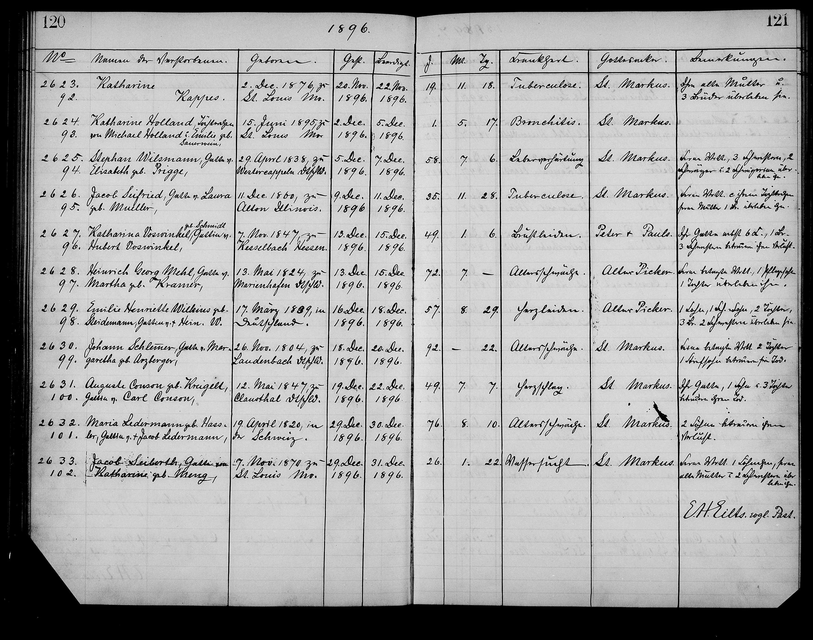

The strongest single Charles-self-attestation of his surname. Charles, age 61, gave Auguste’s name to Pastor Eilts at the funeral; Eilts wrote what he heard — the C-initial form (Conson) that ties straight back to the Trendelburg Contzen line.

St. Marcus death register, 1896 entry: the funeral of Auguste Kreichelt Konzen, Charles’s wife. Recorded by Pastor Eilt Heeren Eilts with Charles himself as the surviving informant. The maiden-name attestation reads “Auguste Conson” — the C-initial form that pairs directly with the Trendelburg parish’s own Contze / Contzen entries (Card 1).
This is the project’s strongest single Charles-self-attestation. Charles, age 61, walked into the parish, gave his deceased wife’s name and his own surname directly to Eilts, and Eilts wrote what he heard. The C-initial form preserves the German C-initial documented in the Trendelburg parish itself (the cross-reference note “siehe auch K. Contze, Cortze, Cordes, Contz” plus primary entries Andreas Contze 1800, Johann Christoph Contze 1808), drops the silent t, softens the tz affricate to s, and Anglicizes the suffix to -on.
Bookend Charles-self-attestations. Charles is the documented speaker at both ends of the surname trail: at his 1866 marriage (groom giving his name to Pastor Wall → Gonnson) and at his wife’s 1896 funeral 30 years later (surviving spouse, the standard informant for a deceased spouse → Conson). Both records capture a [髺n.sən] sound. The other three Charles-family records in between (1872 Gonsen, 1875 Konsen, 1890 Konzen) plausibly reflect the same spoken name to a clerk's ear — though the C-/G-initial varies.